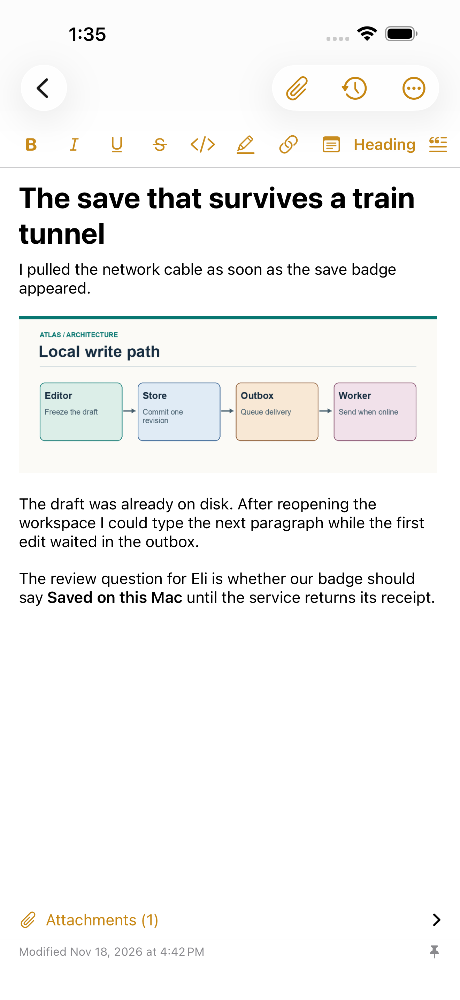
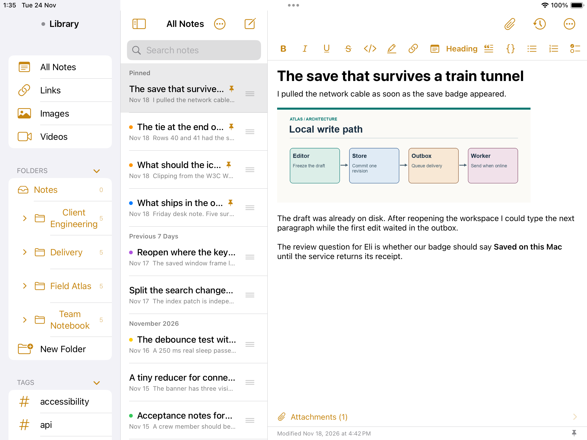

Notes and attachments
Organize notes into folders. Add images, tables and files, search your library, and revisit earlier revisions.
Mac · iPhone · iPad
Write offline, keep diagrams and files beside your text, and choose which folders to sync across devices.


Organize notes into folders. Add images, tables and files, search your library, and revisit earlier revisions.
Choose hourly, daily, or weekly ZIP backups, or turn them off. Copy completed archives from the app’s Backups folder. On iPhone and iPad, iOS chooses when a closed app can run.
Sign in with Apple to sync selected libraries. A standard account has 10 MB of cloud storage shared across its libraries. Local notes use storage on your device.